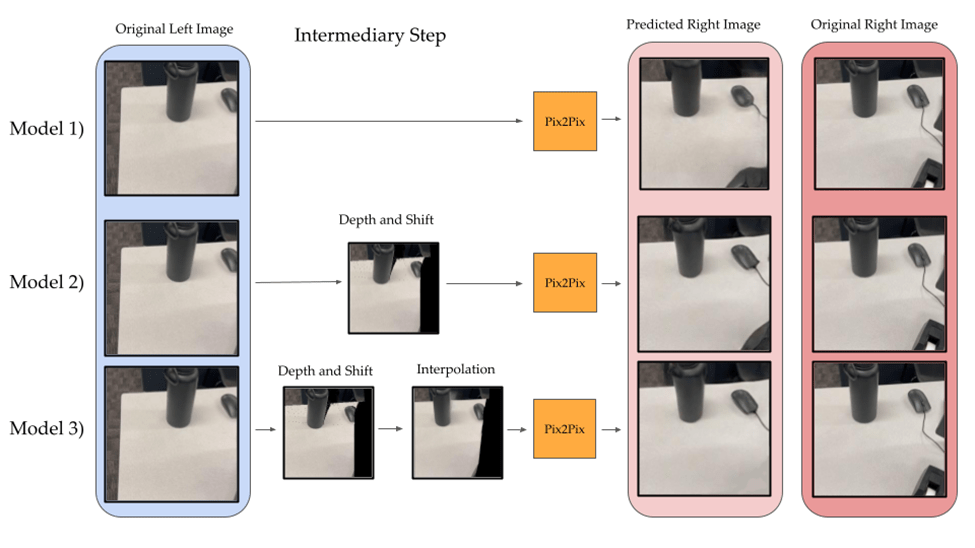

Eye For An Eye: A Deep-Learning and Analytical Method to Spatializing Stereoscopic Images
Abstract
Many recent developments in artificial intelligence (AI) have been inspired by biological processes in the human brain. One of these processes, stereopsis, is how humans use slightly offset images from each eye as well as depth estimation to evaluate an environment. Inspired by this, we propose a hybrid architecture capable of transforming an image captured from one perspective into a corresponding image from an offset perspective. To test the effectiveness of the hybrid model, we explore three approaches to stereopsis: (1) a lone Pix2Pix generative adversarial network, (2) a hybrid method combining Pix2Pix with an analytical depth map and pixel shift, and (3) a version incorporating interpolation with the hybrid method. The version with interpolation yields the best results, achieving an SSIM score of 0.81, a 6% improvement from other methods. This architecture has the potential to enhance various fields, including 3D viewing experiences, medical imaging, and assistive technologies for individuals with impaired vision. Our work aims to advance research in vision augmentation and model design by exploring both analytical and deep learning methods.
Methodology

Dataset
Our data collection involved positioning two identical iPhone 12s 75mm apart, mimicking the average distance between human eyes [14]. We captured video footage at 30 frames per second (fps) in HD resolution with a 0.5 field of view (FOV). The setup simulated the distinct perspectives of the left and right eyes. The videos focused on a water bottle placed on a desk, filmed from multiple angles while maintaining the same distance from the focus point. Throughout data collection, we extracted 3960 individual frames from both videos, with each left image paired with a corresponding ground truth right image. These paired frames were used to train, validate, and test the models.
Results
To evaluate the performance of our proposed approaches, we used four key metrics: Structural Similarity Index (SSIM), Peak Signal-to-Noise Ratio (PSNR), Mean Squared Error (MSE), and Mean Absolute Error (MAE). These metrics were chosen to provide a comprehensive assessment of the image quality and accuracy of the generated perspectives, and each metric (apart from PSNR) for each experimental procedure was calculated by running the input images in the test split and comparing these to their corresponding ground truth images in the test split of the dataset. The PSNR metric was calculated based on only the output images from the method.
| Model | Training Dataset | SSIM | PSNR (dB) | MSE | MAE |
|---|---|---|---|---|---|
| Pix2Pix | Orignal | 0.72 | 19.9 | 689.9 | 11.9 |
| Composite | Combined | 0.76 | 20.3 | 630.9 | 11 |
| Model 3 | Enhanced | 0.81 | 20.6 | 628 | 10.3 |
The results of our evaluation are summarized below. Among the tested models, Model 3, trained on the Enhanced dataset, achieved the highest SSIM (0.81) and PSNR (20.6 dB), while maintaining the lowest MSE (628.0) and MAE (10.3). These results suggest that Model 3 produces the most perceptually accurate and visually similar reconstructions to the ground truth.
Conclusion
Our study explored three approaches to stereoscopic image transformation: (1) a lone Pix2Pix generative adversarial network, (2) a hybrid method combining Pix2Pix with an analytical depth map and pixel shift, and (3) a version incorporating interpolation with the hybrid method. When used individually, the Pix2Pix model demonstrated strong generalization capabilities but introduced artifacts and inconsistencies. The hybrid method improved accuracy by integrating analytical depth mapping and pixel shifting but resulted in missing pixels after the depth-and-shift, slightly reducing the overall accuracy. The final approach, which added interpolation to the hybrid method, achieved the best results by addressing these missing pixels.
By leveraging both deep learning and analytical techniques, the version with interpolation produced the best results, achieving an SSIM score of 0.81, a 6% improvement over the other methods. The deep learning aspect enabled the model to generalize transformations, while the analytical method allowed the model to maintain structural consistency. The addition of interpolation further improved the output by filling in gaps.
These findings highlight the potential of integrating artificial intelligence with analytical methods to enhance applications in a variety of fields, such as 3D viewing and visual assistive technologies.